</em>")
Photo from King County - Marine Life Photos. Taken by Gabriela Hannach.
Margalefidinium spp. formally known Cochlodinium spp. is a dinoflagellate. Its shape is ellipsoidal that resembles Marge Simpson's hair. A single cell body is twisted more than 1.5 times. The width is approximately 20 to 40μm and length is approximately 30 to 80μm. Chains can be formed.

Photo from UBC Phyto'pedia - The Phytoplankton Encyclopaedia Project, licensed under a Creative Commons Attribution-NonCommercial-NoDerivs 3.0 Unported License.
Amphidinium carterae are solitary, oval, tongue-shaped dinoflagellates. These small cells typically range from 12 to 17 μm in length and 7 to 10 μm in width. A cell contains two flagella and one large chloroplast. They are typically seasonal phytoplankton that thrive in the spring but rarely are seen blooming.


Light microscopic images of Chaetoceros radicans from Giffin Rocks-Long Live the Kings, Orcas Island. Bottom photo shows the cells rotated along the axis of where it connects. Photo credit: Lynnette Wood
Chaetoceros radicans are marine centric diatoms. A cell is typically 6 - 25 μm wide and has rounded edges. Spines of adjacent cells connect the cells. These connections create a straight or slightly curved chain. Sometimes the cells are twisted along the axis of where the cells connect. C. radicans have long hair-like spines projecting from its body. All long spines, except for the terminal, have tiny spines used to collect particles/detritus. The terminal spines have a smoother appearance. This phytoplankton thrives in high salinity environments, 30 to 34 ppt.

Photo from UBC Phyto'pedia - The Phytoplankton Encyclopaedia Project, licensed under a Creative Commons Attribution-NonCommercial-NoDerivs 3.0 Unported License.
Bacillaria paxillifera are motile pennate diatoms. Their shape is elongated. Each B. paxillifera cell has two chloroplasts, giving them the yellow-brown appearance. They can range as long as 70 - 200 μm and are 5 - 8 μm wide. Depending on the view, the cell can appear rectangular or pointed. B. paxillifera cells connect on its sides and move by sliding along each other. This is uniquely different from the connection Pseudo-nitzschia cells make; Pseudo-nitzschia cells connect at the ends.

")
Photos from King County: Puget Sound Marine Monitoring. Photographer Gabriela Hannach.
Gyrodinium spp. is a solitary dinoflagellate. These cells have a variety of different physical characteristics. The size can range from small to large (5 - 200 μm). The shape is unlimited to fusiform, biconical, ovoid, and tear-shaped (Kofoid & Swezy, 1921). Its color and opaqueness vary too.
For more information see: A Taxonomic Guide to Some Common Marine Phytoplankton, by Rita Horner (Biopress Ltd. 2002)


Photos from King County: Puget Sound Marine Monitoring. Photographer Gabriela Hannach.
Pleurosigma spp. is a solitary pennate diatom. Their distinguishing feature is their slightly sigmoid shape. The cell's width ranges from 28 – 75μm and length ranges 90 – 600μm.
For more information see: A Taxonomic Guide to Some Common Marine Phytoplankton, by Rita Horner (Biopress Ltd. 2002)


Photos from UBC Phyto'pedia - The Phytoplankton Encyclopaedia Project, licensed under a Creative Commons Attribution-NonCommercial-NoDerivs 3.0 Unported License.
Navicula spp. is a pennate diatom that can be found year-round, but more often in the spring and fall. Its length ranges from 32 – 130μm, and its width 7 – 21μm. Navicula spp. can be misidentified as Pseudo-nitzschia. A few defining characteristics of Navicula spp. are it is solitary, stubbier, boat-shaped, the ends gradually comes to a point, and there are faint longitudinal lines that can be seen using a light microscope. These phytoplankton typically do not form blooms.
For more information see: A Taxonomic Guide to Some Common Marine Phytoplankton, by Rita Horner (Biopress Ltd. 2002)


Top photo: gridle view, Bottom photo: valve view. Photos from King County Marine Monitoring by Gabriela Hannach
Thalassiosira punctigera is a centric diatom that typically inhabits warm to temperate waters. Its diameter can range from 40 – 186μm, and its height can be 20 – 120μm. Because of its valve face (circular view), it can be misidentified as Coscinodiscus. One suggestion is to tap on the slide to rotate phytoplankton to girdle view when observing with a light microscope. T. punctigera protruding thick long spines and marginal threads are more noticeable at this view. Chain of T. punctigera cells are connected by thin thread. The valve surface is convex.
For more information see: A Taxonomic Guide to Some Common Marine Phytoplankton, by Rita Horner (Biopress Ltd. 2002)
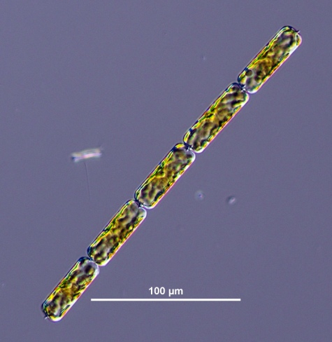Dactyliosolen fragilissimus" title="Photo of Dactyliosolen fragilissimus" style="width:300px;padding:2px;border:0px" /> 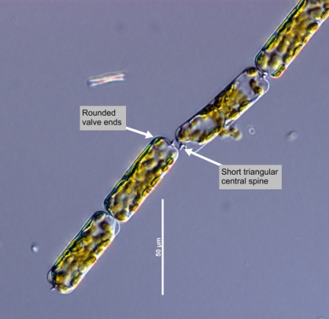Dactyliosolen fragilissimus" title="Photo of Dactyliosolen fragilissimus" style="width:300px;padding:2px;border:0px" />
Photos from: UBC Phyto'pedia - The Phytoplankton Encyclopaedia Project, licensed under a Creative Commons Attribution-NonCommercial-NoDerivs 3.0 Unported License.
Dactyliosolen fragilissimus are cylindrical diatoms containing many chloroplasts. Its size ranges from 40 – 300μm in length and 8 – 70μm in diameter. These yellow-brown cells commonly appear in chains. The ends are rounded, and one end has a small triangular spinal point that makes it possible to link with adjacent cells. Dactyliosolen fragilissimus can inhabit waters year-round. It can be commonly misidentified as Guinardia delicatula. Some key distinct characteristics are Dactyliosolen fragilissimus have a spinal point that is more centralized at the end, and its ends are more rounded than Guinardia delicatula.


Photo credit: Gabriela Hannach, King County Environmental Lab, https://green2.kingcounty.gov/marine/Photo/Individual/1/382?photoId=747
Hemiaulus hauckii are diatoms that form in spiral chains. Each cell contains numerous of chloroplasts. These chains resemble connected links. Cells are connected in pairs then connected with adjacent pairs. A short stubby horn protrudes from each end of the chain. Hemiaulus hauckii are found in warm to temperate waters.

Dissodinium pseudolunula. East Passage (chlorophyll maximum layer), July 2015. Crescent shaped secondary cyst with dinospores. Ref: Horner 2002. Photo credit: Gabriela Hannach
Fig from: https://green2.kingcounty.gov/marine/Photo/Individual/2/421?photoId=1257
Dissodinium pseudolunula are dinoflagellates that have many forms in its life cycle. The most common vegetative cells are large and spherical or subspherical. The diameter for the cell can be longer than 350μm. The non-motile cells can have diameters less than 200μm. When Dissodinium pseudolunula is in the biflagellated armored cell form, it can look like Alexandrium (as seen in the picture above). A unique feature is the crescent shaped shell that the cells are rested in. The cells are typically found in warm to tropical waters.

Guinardia delicatula. East Passage (surface), September 2014. Note marginal process. Ref: Horner 2002. Photo credit: Gabriela Hannach
Fig from: https://green2.kingcounty.gov/marine/Photo/Individual/1/381?photoId=1214
Guinardia delicatula are cylindrical, centric diatoms commonly found in chains. The cells are 20 – 70μm long and 8 – 40μm wide. Chains are formed by the connection of the cell’s short spines to the adjacent cells’ slot. Its chloroplasts are prominent, large and irregular. Guinardia delicatula inhabit neritic and temperate regions.

Lingulodinium polyedrum. A-C = Cell in different views; D = Cyst; E = Squashed cell in ventral view. Photographer/artist: Mats Kuylenstierna
Figs from: http://nordicmicroalgae.org/taxon/Lingulodinium%20polyedrum
Lingulodinium polyedrum or Gonyaulax polyedra are polyhedral-shaped dinoflagellates. These cells do not have antapical spines and apical horn. Cysts can be formed. Lingulodinium have shown to produce yessotoxin, similar to Protoceratium reticulatum and Gonyaulax spinifera. Cells commonly found in neritic zone and warm temperate to tropical waters.

Heterocapsa triquetra. Photo credit: Gabriela Hannach, King County
Heterocapsa triquetra are solitary, golden colored cells that resemble of two cones connected at the base. The ends of the cell are rounded, and a horn protrudes from the cell’s hypotheca. Cells have a length of 16 - 30μm and a width of 9 – 18μm. Heterocapsa triquetra are globally dispersed and can be found in many aqua environments such as neritic, estuarine, brackish water, marine, and in low salinity water. Many other plankton such a heterotrophic dinoflagellates, ciliates and copepods feed on Heterocaps triquetra.
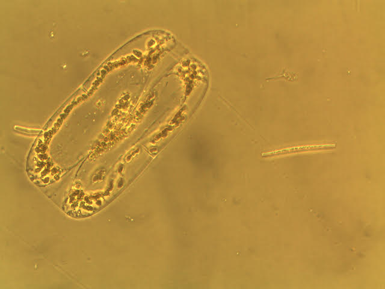
Tropidoneis. Photo credit: Karlista Rickerson; Finding credit: Mary Kelly
Triopidoneis antarctica are large solitary diatoms. Cells have an elongated oval and a slightly rectangular appearance. There are numerous of chloroplasts, especially surrounding the nucleus. The cells range from 160 – 350μm long. They commonly appear during the summer.


Detonula pumila. Photo credit: Gabriela Hannach, King County
Detonula pumila are cylindrical and yellow-brown diatoms. Although difficult to notice in the images of above, these cells have modest dents on the centers the two parallel outer walls where adjacent cells touch. At these dents are short spines which are used to connect cells with the adjacent cells. Detonula pumila are estimated to range from 15 – 120μm long and 15 – 45μm wide. These cells prefer inhabitating warmer waters.

Polykrikos schwartzii. Photo credit: Teri King, WSG
Polykrikos schwartzii cells are marine dinoflagellates that resemble of a barrel. The shape is cylindric and slightly squished to give that familiar appearance. These solitary phytoplankton are typically 100 – 169μm in width and 60 – 100μm in length. Often, they are found in coastal and estuarine waters and during summer and autumn seasons. Polykrikos schwartzii at high concentrations indicates high nutrient levels and turbulent water conditions (Matsuoka et al. 2003).
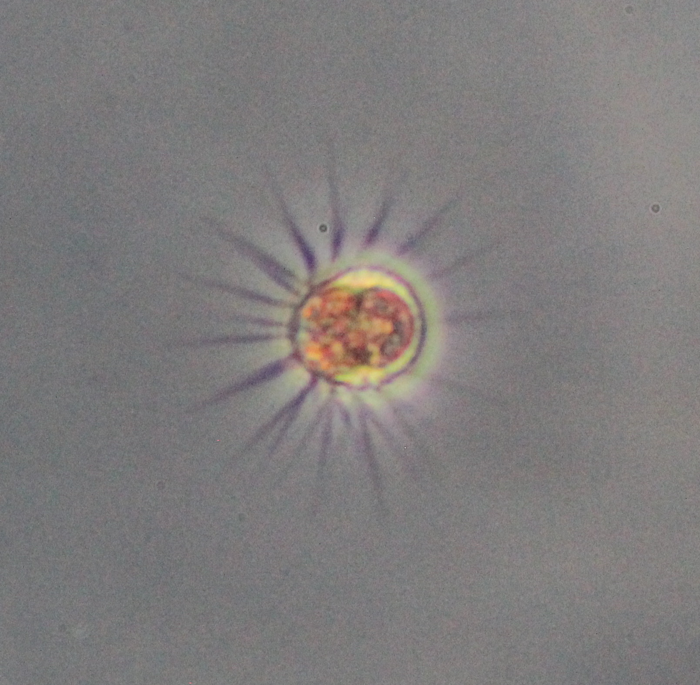 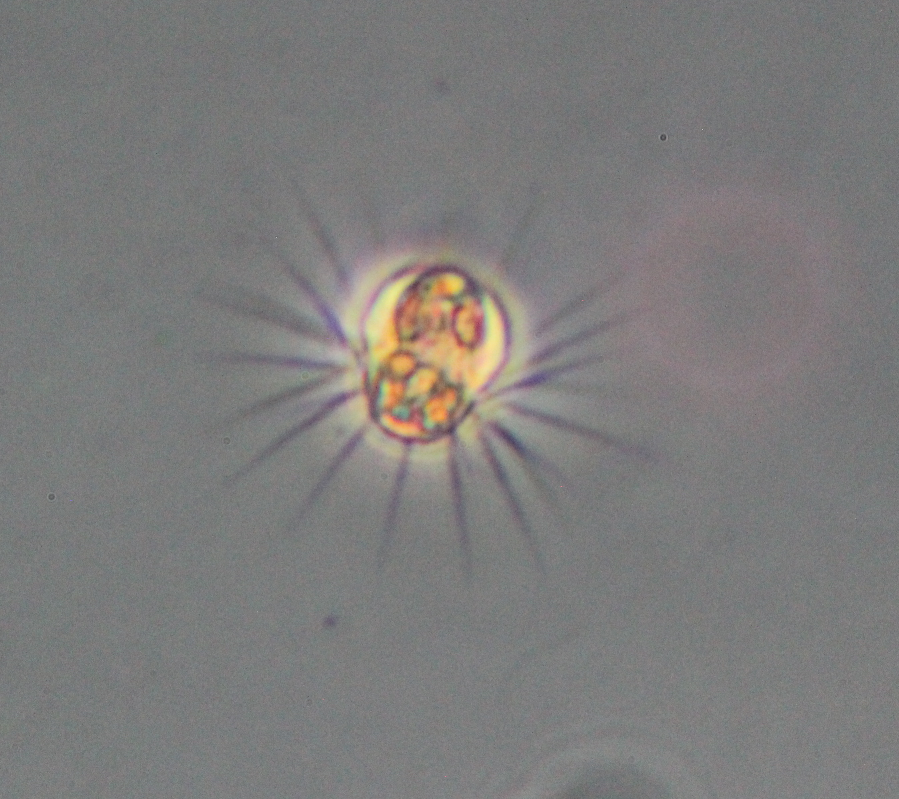
Mesodinium rubrum. Photo credit: Brian Bill, NOAA
This month we revist Mesodinium rubrum. It is a marine photosynthetic ciliate that is a prey of Dinophysis. These cells resemble a sunflower. Its body is almost circular shaped, ranging from 10-70 um long and 7-20 um wide. Around the body are cilia that can stretch out to be 10-20 times longer than its body when in use. At high concentrations, Mesodinium rubrum can cause a bold red water discoloration. SoundToxins has recently requested for our participants to now report these phytoplankton whenever present in their water samples.

Phaeocystis globosa. Photo credit: Vera Trainer, NOAA
Phaeocystis globosa is a marine phytoplankton that is often observed to be in colonies. These colonies have been documented to cause harmful effects. In motile stage, a cell has a length of 5 μm and two flagella that are greater than its cell length. In nonmotile stage (in colony), a cell has about a length of 7 μm and lacks a flagella. These sphere-shaped colonies commonly have a diameter of 2 mm or up to a maximum diameter of 8 mm. Phaeocystis globosa are evenly arranged when in a colony. They inhabit temperate water, Oceanic, coastal and North Sea.

Slightly rotated view of Protoperidinium leonis. Photo credit: Teri King, WSG
Protoperidinium leonis is a solitary and medium-sized dinoflagellate ranging from about 50-95 μm in size. Proportionally, the cell is typically as long as its width or slightly longer. Its basic geometric shape is rhombic. The cell has an end that splits into two short antapical spines. These cells can be easily misidentified as P. obstusum. Protoperidinium leonis are distributed widely, coastal and oceanic, and in temperate to tropical waters.
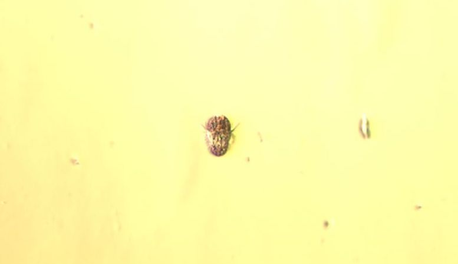
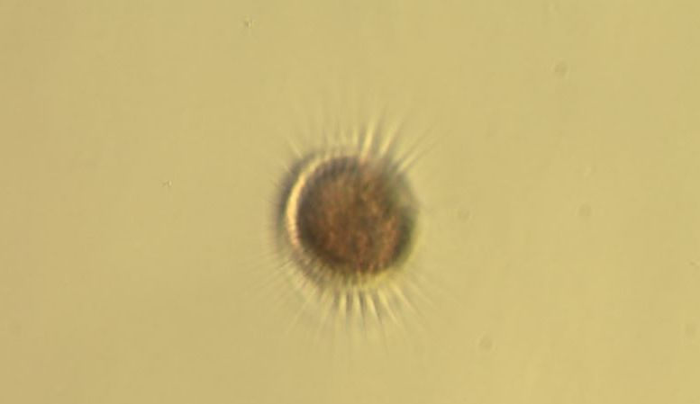
Mesodinium rubrum is a marine photosynthetic ciliate that can resemble a sunflower.
Its body is almost circular shaped, ranging from 100μm long and 7μm thick.
Around the body are cilia that can stretch out to be 10-20 times longer than its body when in use.
At high concentrations, Mesodinium rubrum can cause a bold red water discoloration.
Photo credit: Teri King, WSG
Odontella aurita cells join in straight or zig-zag chains, connecting with mucous pads on either one or both elevations.
Odontella aurita are 10-97μm wide at their apical axis, and have numerous small chloroplasts. These cells have short external labiate processes, differing from
Odontella longicruris which has long external tubes extending past neighboring cells. Odontella aurita are cosmopolitan.
For more information see: A Taxonomic Guide to Some Common Marine Phytoplankton, by Rita Horner (Biopress Ltd. 2002)
Photo credit: Bruce Foote, Feiro Marine Life Center
Ceratium divaricatum are large cells that are more or less symmetrical. It has a slightly skewed stubby apical horn and thick thecal plates.
They can be misidentified as C. balechii. C. divaricatum's horns are shorter.
Blooms sometime occur alongside with Ceratium furca and Prorocentrum micans blooms and can appear as a red discoloration in the water.
These cells can be found in the Neritic zone and off of Washington and British Columbia.
For more information see: A Taxonomic Guide to Some Common Marine Phytoplankton, page 137, by Rita Horner (Biopress Ltd. 2002)
Photo credit: Gabriela Hannach, King County Environmental Lab.
Amylax triacantha are small solitary flagellates, 42-60μm long with an apical horn extending from the concave epitheca and one or more antapical spines originating from the terminal end of the hypotheca.
Amylax triacantha have a displaced cingulum, and are widest posteriorly. These cells have chloroplasts and thin, reticulated theca.
Amylax triacantha are found in coastal cold waters in both the Pacific and Atlantic.
For more information see: A Taxonomic Guide to Some Common Marine Phytoplankton, by Rita Horner (Biopress Ltd. 2002) Photo credit: Gabriela Hannach, King County Environmental Lab.
Dictyocha speculum are solitary silicoflagellates, approximately 19-34μm in diameter, not including the spines. Two dissimilar hexagonal rings are connected internally by six bars, with six to eight spines radiate from the outer ring.
Dictyocha speculum can be either naked (skeleton stage) or filled with an golden chloroplasts. These species are common near the coast, and cosmopolitan in cold and temperate waters.
For more information see: A Taxonomic Guide to Some Common Marine Phytoplankton, by Rita Horner (Biopress Ltd. 2002) Photo credit: Left image - Gabriela Hannach, King County Environmental Lab.
Both images: Mesodinium rubrum
Photo credit: Teri King, WSG
Phytoplankton of the month — December 2019
Mesodinium rubrum

Phytoplankton of the month — November 2019
Odontella aurita


Phytoplankton of the month — October 2019
Ceratium divaricatum
Phytoplankton of the month — September 2019
Amylax triacantha
Phytoplankton of the month — August 2019
Dictyocha speculum

Right image - Teri King, Washington Sea Grant.
Lauderia annulata are centric diatoms joined in short, straight chains. Cells are 24-75μm in diameter, with numerous, small discoid chloroplasts. Lauderia annulata are neritic and temperate to warm water.
For more information see: A Taxonomic Guide to Some Common Marine Phytoplankton, by Rita Horner (Biopress Ltd. 2002)
Photo credit: Gabriela Hannach, King County Environmental Lab
Chaetoceros concavicornis have cells 12-30μm wide, sometimes solitary but most often joined in straight chains. The upper valve of each cell is rounded, with setae originating from the center; lower valves are flat, with seate originating from inside the valve margins. Setae are thinner at the base and become wider away from the cell. Chaetoceros concavicornis are cosmopolitan and sometimes common in northern temperate and cold water areas.
For more information see: A Taxonomic Guide to Some Common Marine Phytoplankton, by Rita Horner (Biopress Ltd. 2002)
Photo credit: Gabriela Hannach, King County Environmental Lab
Bacteriastrum delicatulum are centric diatoms, 6-15μm in diameter and joined in chains. Setae of two adjacent cells are fused and branch further away from the cell. Bacteriastrum have numerous small, round chloroplasts. Bacteriastrum are temperate, and common to coastal waters.
For more information see: A Taxonomic Guide to Some Common Marine Phytoplankton, by Rita Horner (Biopress Ltd. 2002)


Photo credit: Gabriela Hannach, King County Environmental Lab (top), Teri King, Washington Sea Grant (bottom)
Thalassionema nitzschioides are 10-80μm long, and 2-4μm wide. Cells attach at the ends with mucous pads and form star shaped or zig-zag colonies. Valve ends are similar in shape and wide, with nearly parallel sides. Thalassionema are neritic, and cosmopolitan except within polar regions.
For more information see: A Taxonomic Guide to Some Common Marine Phytoplankton, by Rita Horner (Biopress Ltd. 2002)
%20l46213-8.jpg "Photo of <em>Coscinodiscus wailesii</em> by Gabriela Hannach, King County Environmental Lab")

Photo credit: Gabriela Hannach, King County Environmental Lab (top), Lyndsey Claassen, UW Tacoma (bottom)
Coscinodiscus wailesii are large, solitary centric diatoms 280-500μm in diameter, numerous chloroplasts present with a dense ring in the center. Cells are rectangular and flat in valve view, with a concentric depression near the mantle. Coscinodiscus wailesii are common in warm to temperate water.
For more information see: A Taxonomic Guide to Some Common Marine Phytoplankton, by Rita Horner (Biopress Ltd. 2002)


Photo credit: Gabriela Hannach, King County Environmental Lab (top), Lyndsey Claassen, UW Tacoma (bottom)
Protoperidinium depressum are large, armored cells, 116-200μm long, and 115-144μm wide. These cells are flattened along the dorsal and ventral surfaces, concave toward either end, and convex near the cingulum. One apical horn extends from the epitheca, and two divergent horns extend from the hypotheca. Protoperidinium depressum are absent of chloroplasts, instead consuming cells or particles in a phagocytic vacuole. These cells are often abundant in coastal and oceanic waters.
For more information see: A Taxonomic Guide to Some Common Marine Phytoplankton, by Rita Horner (Biopress Ltd. 2002)

Photo credit: Gabriela Hannach, King County Environmental Lab
Dinophysis fortii are armored, laterally flattened cells 62-66μm long, and broadest towards the bottom of the cell. The dorsal edge is curved while the ventral side is almost straight. The hypotheca takes up three-quarters of the cell’s length, with the sulcal list taking up about four fifths of the cell. The thecal surface is strongly areolate with many red-brown chloroplasts present. Dinophysis fortii are neritic and oceanic.
For more information see: A Taxonomic Guide to Some Common Marine Phytoplankton, by Rita Horner (Biopress Ltd. 2002)


Photo credit: Gabriela Hannach, King County Environmental Lab
Asteromphalus heptactis are solitary centric diatoms with a diameter between 38-175μm in valve view. These cells can be oval, circular, or oblong with seven rays extending from a central region. Sectors between rays are wedge shaped, areolated, and curve towards the valve center. In girdle view, the raised rays can be observed as points. Asteromphalus are found in warm, temperate, and southern cold water regions.
For more information see: A Taxonomic Guide to Some Common Marine Phytoplankton, by Rita Horner (Biopress Ltd. 2002)


Photo credit: Gabriela Hannach, King County Environmental Lab
Odontella longicruris are centric diatoms, approximately 15-110μm wide. Though they can occasionally be observed in their solitary form, they are often joined in straight chains. These cells have external tubes that project from central elevations at either end of the cell, and connect to neighboring cells. They have many small chloroplasts located near the cell walls, and are yellow-brown in color. Odontella longicruris are neritic.
For more information see: A Taxonomic Guide to Some Common Marine Phytoplankton, by Rita Horner (Biopress Ltd. 2002)

Photo credit: Gabriela Hannach, King County Environmental Lab
Corethron hystrix are centric diatoms, approximately 20-150μm long and 20-40μm wide. These cells have a girdle composed of many bands and spines on both valves. A series of short, hooked spines can be observed on one valve. They have flat, elongated chloroplasts near the center. Corethron are cosmopolitan.
For more information see: A Taxonomic Guide to Some Common Marine Phytoplankton, by Rita Horner (Biopress Ltd. 2002)

Photo credit: Gabriela Hannach, King County Environmental Lab
Melosira are centric diatoms, approximately 11-30μm long and 17-70μm wide. These cells connect in either two or threes by their girdle and form beadlike chains. They have numerous chloroplasts. Melosira are cosmopolitan.
For more information see: A Taxonomic Guide to Some Common Marine Phytoplankton, by Rita Horner (Biopress Ltd. 2002)

Photo credit: Gabriela Hannach, King County Environmental Lab
Oxyphysis are medium sized asymmetrical dinoflagellates, approximately 16-24μm wide and 60-80μm long. The cells are elongated and are always less than 4 times its width. The epitheca is asymmetrical with a spine on the right, and its hypotheca has a spine at the tip. Oxyphysis is heterotrophic, meaning it consumes other plankton and therefore has no chloroplasts. Oxyphysis are common in cold and warm temperate seas.
For more information see: A Taxonomic Guide to Some Common Marine Phytoplankton, by Rita Horner (Biopress Ltd. 2002)

Photo credit: Tracie Barry, University of Washington Tacoma
Dinophysis rotundata are small to medium sized armored dinoflagellates approximately 36-56μm long. The top of the cell (epitheca) is low and rounded. The side wing (left sulcal list) extends from one-half to three-quarters the length of the bottom portion of the cell (hypotheca). Chloroplasts are absent. Dinophysis rotundata are found in warm and cold waters. They produce dinophysistoxins and okadaic acid causing Diarrhetic Shellfish Poisoning (DSP) in humans.
For more information see: A Taxonomic Guide to Some Common Marine Phytoplankton, by Rita Horner (Biopress Ltd. 2002)

Photo credit: Lyndsey Claassen, Washington Sea Grant
Protoperidinium steinii are small to medium sized dinoflagellates, approximately 39-60μm long and 22-44μm wide. These pear-shaped cells have a horn on the epitheca, while its hypotheca has two spines. P. steinii are cosmopolitan.
For more information see: A Taxonomic Guide to Some Common Marine Phytoplankton, by Rita Horner (Biopress Ltd. 2002)

Photo credit: Sarka Martinez, Orcas Island
Cylindrotheca closterium are solitary pennate diatoms, approximately 30-400μm in length and 2.5-8μm wide. This fusiform shaped cell has narrowing long and thin ends. These ends may curl slightly in either the same or opposite directions. Two chloroplasts are located in the middle of the cell.
Cylindrotheca closterium are cosmopolitan.
For more information see: A Taxonomic Guide to Some Common Marine Phytoplankton, by Rita Horner (Biopress Ltd. 2002)


Photo credit: Gabriela Hannach, King County Environmental Lab
Rhizosolenia spp. are pennate diatoms, approximately 20-70μm in diameter for R. styliformis and 4-20μm in diameter for R. setigera. These long, thin cells are generally solitary or found in short chains. The ends of the cells are short and needle-like. Many small chloroplasts are located throughout the cell.
Rhizosolenia spp. are found in temperate waters.
For more information see: A Taxonomic Guide to Some Common Marine Phytoplankton, by Rita Horner (Biopress Ltd. 2002)


Photo credit: Brian Bill, NOAA NWFSC
Heterosigma is a raphidophyte generally ~25um in diameter. The cell is slightly compressed and has two unequal flagella that it uses for movement. These cells contain many golden brown chloroplasts near the edges of the cell. Since their cell wall is not rigid, they can readily change shape. These fast swimmers can form extensive blooms in the mid-summer-fall when temperatures are above 15°C.
This genus is known to produce a naturally occurring toxin, which can cause fish kills, but the mechanism in which it can do so is unknown. It kills finfish, especially in net pens, as well as wild fish, and is known for antagonistic effects on organisms ranging from bacteria to fish.
Heterosigma has been identified in Washington since monitoring programs first began in 1960s, and the first recorded fish losses in the region were from a bloom near Lummi Island in 1976. These closures have had serious economic impacts on the communities dependent on these fisheries.
For more information about Heterosigma, please refer to NOAA’s Harmful Algal Blooms and Biotoxins page at: http://www.nwfsc.noaa.gov/hab/habs_toxins/hab_species/index.cfm

 Photo credit: Left: Lyndsey Claassen, SoundToxins; Right: Gabriela Hannach, King County Environmental Lab
Photo credit: Left: Lyndsey Claassen, SoundToxins; Right: Gabriela Hannach, King County Environmental Lab
Actinoptychus senarius are centric diatoms, approximately 20-150μm in diameter. They are found solitary or in loose groups. Their valves are divided into six sections alternating elevated and depressed.
Actinoptychus senarius are widely distributed.


Emiliania huxleyi is a coccolithophore species approximately 5-10μm in diameter. The exterior of the cell is covered in calcium carbonate platelets (called coccoliths). E. huxleyi is photosynthetic and removes CO2 from the atmosphere to create its coccoliths. This organism can occur in massive blooms that are highly reflective, allowing it to be seen from space.
E. huxleyi is the most abundant of the coccolithophore species on a global basis due to its large temperature range (1-30 °C). This organism thrives in locations that are low on nutrients but dies off as nutrients become more abundant. Their ability to thrive in low nutrient conditions eliminates competition from other phytoplankton species. This species is not toxic, and does not harm fish, shellfish, or hinder any human recreation.
For more information on Emiliania huxleyi in Hood Canal, see:
Plankton Abloom in Washington’s Hood Canal, NASA Earth Observatory 2017
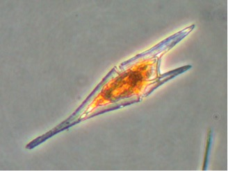
Photo credit: Brian Bill, NOAA
Ceratium furca are large dinoflagellates, approximately 70-100µm long and 30-50µm wide. The cell is widest at the girdle. C. furca’s epitheca tapers to one point, while its hypotheca extends into two unequal points, where the right is shorter than the left. This organism sometimes blooms in the late summer to early fall. Ceratium lineatum looks similar to C. furca, but is much smaller in size (30-60µm long and 25-45µm wide).
Ceratium furca are found in temperate and tropical waters.
For more information on Ceratium furca see:
A Taxonomic Guide to Some Common Marine Phytoplankton, by Rita Horner (Biopress Ltd. 2002)

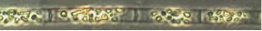
Photo credit: top: Gabriela Hannach, King County Environmental Lab; bottom: Karlista Rickerson
Leptocylindrus danicus are centric diatoms, approximately 5-16µm wide. These cylindrical cells form long chains connected by the entire valve surface. These valve surfaces are either convex or concave fitting into the other convex/concave cell wall. They have small oval shaped chloroplasts distributed throughout the cell.
Leptocylindrus danicus are cosmopolitan and are considered a common north temperate species.
For more information on Leptocylindrus danicus see:
A Taxonomic Guide to Some Common Marine Phytoplankton, by Rita Horner (Biopress Ltd. 2002)
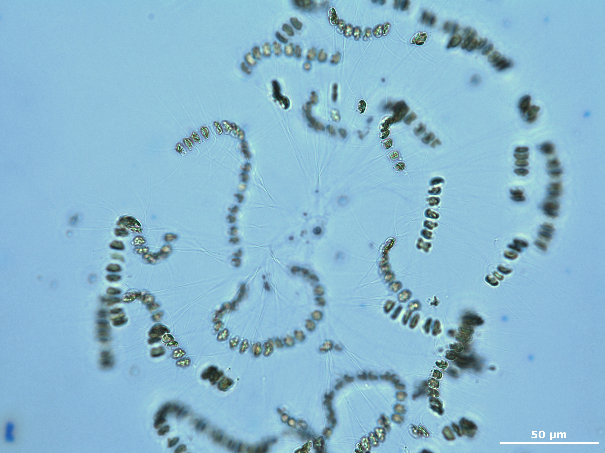
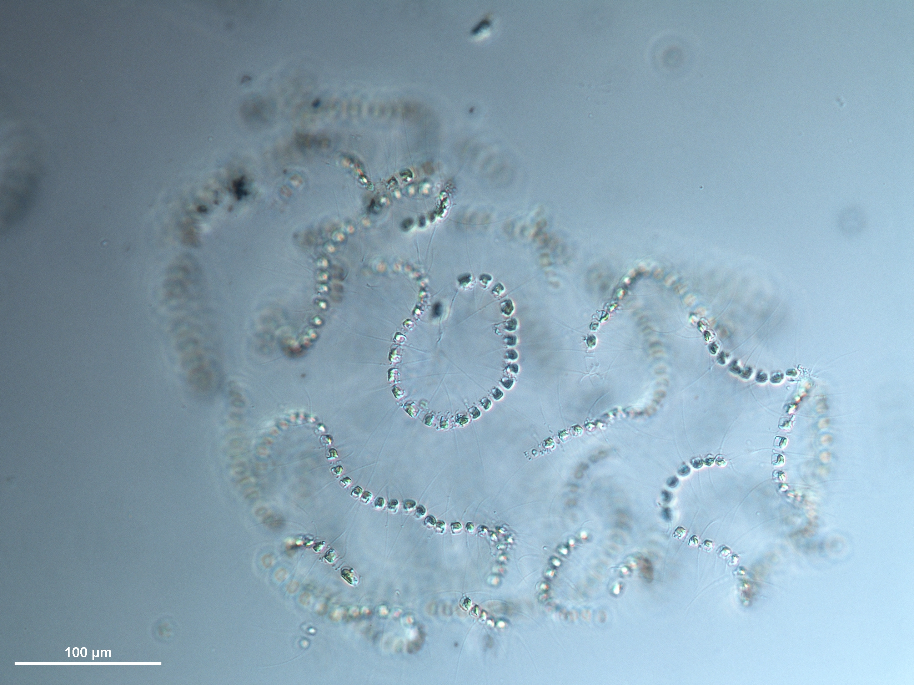
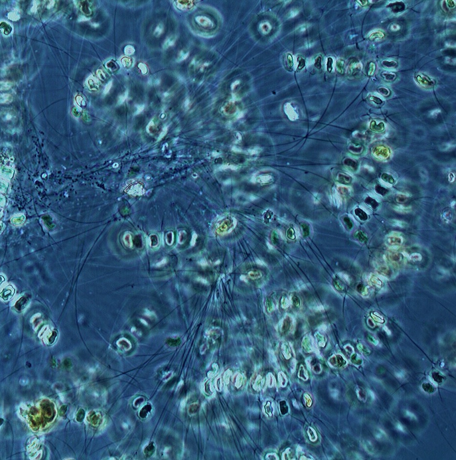
Photo credit: top left and right, Gabriela Hannach, King County Environmental Lab; bottom, Karlista Rickerson (click images for larger view)
Chaetoceros socialis are small diatoms joined in petite, bendable chains. They are 4-15µm wide with their hair-like setae coming from the inside corners of the cell. C. socialis are generally found in a spherical shape.
Chaetoceros socialis are cosmopolitan.
For more information on Chaetoceros see:
A Taxonomic Guide to Some Common Marine Phytoplankton, by Rita Horner (Biopress Ltd. 2002)
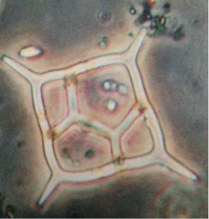
Photo credit: Rita Horner
Dictyocha are small to medium, star shaped silicoflagellates. They are 10-45µm in size, not including their spine length. Their skeleton is composed of silica and their chloroplasts are golden brown in color. Taxonomy is based upon the structure of the skeletons, but they do vary in shape. They are solitary cells.
Dictyocha are found in warm and cold coastal and oceanic seas.
For more information on Dictyocha see:
A Taxonomic Guide to Some Common Marine Phytoplankton, by Rita Horner (Biopress Ltd. 2002)
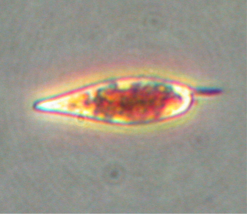
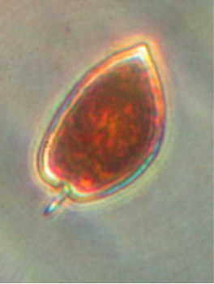
Left image: P. gracile; Right image: P. micans
Photo credits: Brian Bill, NOAA
Prorocentrum are small to medium sized dinoflagellates with a theca (shell) made up of two lateral plates. The two species of Prorocentrum vary in shape- teardrop shaped with a rounded end (P. gracile) or a broad leaf shaped with a pointed end (P. micans,). Both have a small spine present on the anterior. Chloroplasts are present.
Prorocentrum are found in temperate to tropical waters.
For more information on Prorocentrum see:
A Taxonomic Guide to Some Common Marine Phytoplankton, by Rita Horner (Biopress Ltd. 2002)
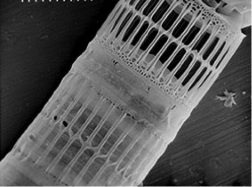
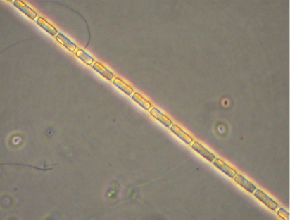
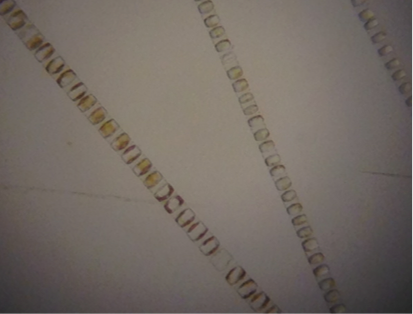
Top: scanning electron microscopy image, Bottom: Light microscopy images
Photo credit: Top and left image: Brian Bill, NOAA; Right image: J. Runyan, Washington Sea Grant
Skeletonema costatum are circular diatoms approximately 2-21µm in diameter. External tubes join the cells together to form long chains. The spaces between the cells may be short or long. Each cell has two chloroplasts.
Skeletonema costatum are found off the coast all over the world, except in polar seas.
For more information on Skeletonema see:
A Taxonomic Guide to Some Common Marine Phytoplankton, by Rita Horner (Biopress Ltd. 2002)
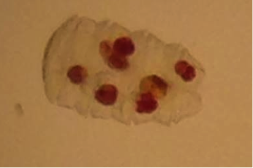
Photo credit: J. Runyan, Washington Sea Grant
Polykrikos spp. are unarmored dinoflagellates, approximately 100-150µm long and composed of 2-8 zooids. Zooids are a single organism that makes up a colonial organism. Their barrel shape does not show the separation between the zooids. Stinging cells and food vacuoles are present. Chloroplasts are absent. Polykrikos hunt diatoms and dinoflagellates.
Polykrikos spp. are found in temperate waters such as Puget Sound.
For more information on Polykrikos see:
A Taxonomic Guide to Some Common Marine Phytoplankton, by Rita Horner (Biopress Ltd. 2002)
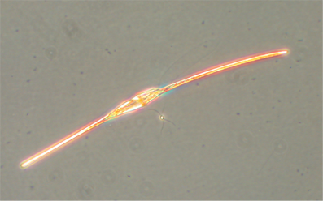
Photo credit: Brian Bill, NOAA
Ceratium fusus are dinoflagellates, approximately 200-300µm long and 15-30µm wide. These singular cells are fusiform in shape with one end of the cell slightly tapering and curving towards the left, while the other end slightly tapering and curving towards the right. Linear markings are found towards the middle of the cell.
Ceratium fusus are found in temperate and tropical waters.
For more information on Ceratium fusus see:
A Taxonomic Guide to Some Common Marine Phytoplankton, by Rita Horner (Biopress Ltd. 2002)
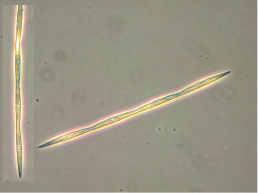
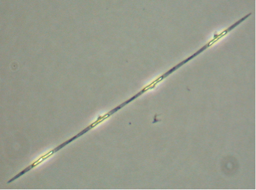
Left image: Large size cells of Pseudo-nitzschia; Right image: Small size cells of Pseudo-nitzschia
Photo credit: Brian Bill, NOAA
Pseudo-nitzschia spp. are pennate diatoms. For the purposes of SoundToxins, we categorize them into two size classes: Large size cells (P. australis, P. heimii, P. fraudulenta, P. pungens, P. multiseries) which are generally 50-145 µm long and 2.5-10.0 µm wide and small size cells (P. pseudodelicatissima, P. delicatissima, P. cuspidata) which are generally 30 to 90 µm long and 1.0-2.0 µm wide.
The genus Pseudo-ntizschia includes approximately eight species that SoundToxins is looking for, including P. australis, P. multiseries, P. heimii, P. fraudulenta, P. pungens, P. pseudodelicatissima, P. delicatissima, and P. cuspidata.
This genus is known to produce domoic acid, a naturally occurring toxin. Domoic acid can be accumulated by both shellfish and finfish. Organisms can accumulate domoic acid without apparent ill effects; however, in humans the toxin interferes with nerve signal transmission. Also known as Amnesic Shellfish Poisoning (ASP), mild domoic acid poisoning symptoms can include nausea, vomiting, dizziness, and possibly short-term memory loss, while people poisoned with very high doses of the toxin can die.
Domoic acid poisoning via shellfish was first observed in Eastern Canada when three people died and 105 people became ill from eating contaminated blue mussels from Prince Edward Island in 1987. The toxin has since been identified along the West coast in fish and shellfish causing the closures of both recreational and commercial fisheries for extended periods of time. These closures have had serious economic impacts on the communities dependent on these fisheries.
The Washington Department of Health actively monitors and routinely closes shellfish harvesting areas when domoic acid levels are at or above 20 ppm, except in the viscera of Dungeness crab where the closure level is 30 ppm. SoundToxins volunteers identify and count Pseudo-ntizschia cells from whole water samples and provide an alert when the large size varieties are observed at cell counts over 50,000 cells/L and small size varieties are at cell counts over 1,000,000 cells/L.
For more information about Domoic Acid Poisoning, please refer to NOAA's Harmful Algal Blooms and Biotoxins page.
For more information on Pseudo-nitzschia see the following references:
A Taxonomic Guide to Some Common Marine Phytoplankton, by Rita Horner (Biopress Ltd. 2002)
Fryxell, G.A., M.C. Villac, and L.P. Shapiro. 1997. The occurrence of the toxic diatom genus Pseudo-nitzschia (Bacillariophyceae) on the West Coast of the USA, 1920-1996: a review. Phycologia 36:419-437
Hasle, G.R. and E.E. Syvertsen. 1996. Marine Diatoms, pp.5-385. In: C.R. Tomas (ed.) Identifying Marine Diatoms and Dinoflagellates, Academic Press, San Diego.
Hasle, G.R., C.B. Lange, and E.E. Syvertsen. 1996. A review of Pseudo-nitzschia, with special reference to the Skagerrak, North Atlantic, and adjacent waters. Helgolander Meeresunters. 50:131-175
Skov, J., N. Lundholm, O. Moestrop, and J. Larsen. 1999. Potentially toxic phytoplankton 4. The diatom genus Pseudo-nitzschia (Diatomophyceae/Bacillariophyceae). ICES Identificatioin Leaflets for Plankton. Leaflet No. 185. ICES, Copenhagen. 23 pp.
Lundholm, N. et al. 2003. A study of the Pseudo-nitzschia pseudodelicatissima/cuspidata complex (Bacillariophyceae): What is P. pseudodelicatissima? J. Phycol. 39:797-813
Lundholm, N. et al. 2006. Inter- and intraspecific variation of the Pseudo-nitzschia delicatissima complex (Bacillariophyceae) illustrated by rRNA probes, morphological data and phylogenetic analyses. J. Phycol. 42:464-481
Lundholm, N. et al. 2010. Cryptic and pseudo-cryptic diveristy among species of the diatom genus Pseudo-nitzschia based on nuclear, plastid and mitochondrial sequence data; including descriptions of P. hasleana sp. nov. and P. fryxelliana sp. nov.
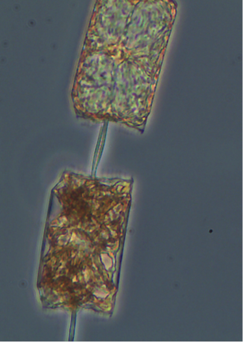
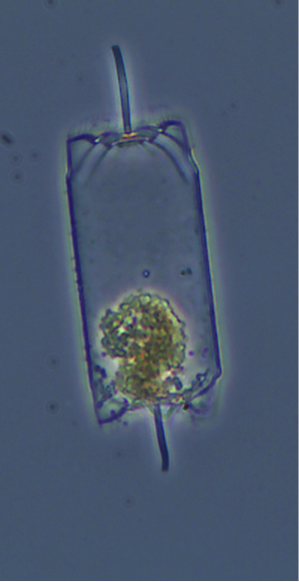
Left image: Ditylum chain; Right image: Ditylum resting spore
Photo credit: Brian Bill, NOAA
Ditylum brightwellii are diatoms, 80-130µm long. These cells can be found individually or in chains. Depending on how you view them, they are rectangular in girdle view and triangular in valve view. In both views, you will be able to see the ridges on the outskirts of the cell. Ditylum has many small, evenly distributed, speckled chloroplasts. These organisms can create resting spores that are easy to spot. The cell is clear except for the spore found within each singular cell.
Ditylum are found everywhere except in polar waters.
For more information on Ditylum see
A Taxonomic Guide to Some Common Marine Phytoplankton, by Rita Horner (Biopress Ltd. 2002)
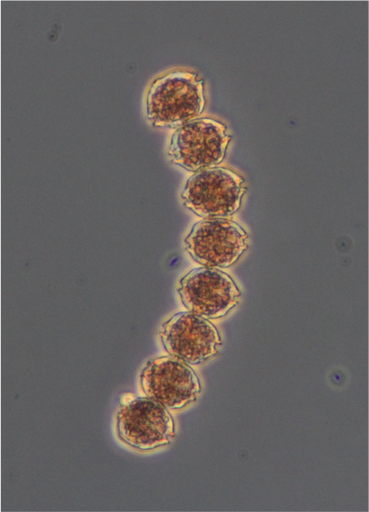
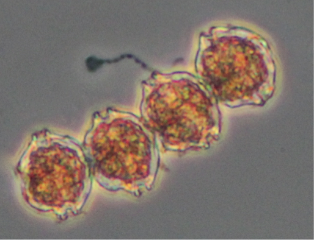
Alexandrium catenella is an armored dinoflagellate, approximately 24-24µm long and 22-44µm wide. Their round cells are identified by the shape and position of their pores and are often found in chains although solitary cells can also be observed.
This species is known to produce paralytic shellfish toxins (PSTs), which cause paralytic shellfish poisoning. Paralytic shellfish poisoning effects the neurological system and can result in tingling of the lips and tongue, loss of control of arms and legs, and respiratory arrest in humans if toxin levels are high. The accumulation of PSTs in shellfish is not a new phenomenon, nor is it one confined to Washington State. It has been occurring for hundreds of years in many parts of the world, primarily in temperate waters. Along the Pacific Coast, poisonous shellfish have been found all the way from Alaska to California. A member of Captain Vancouver's crew died in 1793 after eating toxic shellfish from an inlet in British Columbia, Canada, a place now known as Poison Cove. This was the first recorded PSP death in the Pacific Northwest. Native Americans were undoubtedly aware of the problem long before that, however. Washington State began intermittent testing for PSP in the 1930's with a more robust program beginning in 1957 after five Washington State residents suffered from PSP, three of whom died.
Alexandrium catenella can form resting cysts, when conditions are unfavorable, which allows for them to sit dormant for a period of time, re-emerging when environmental conditions are conducive to growth. The cysts are toxic and shellfish consuming these cysts can become toxic event when live cells of Alexandrium are not present in the water column. More information on Alexandrium cyst mapping in Puget Sound
The Washington Department of Health actively monitors and routinely closes shellfish harvesting areas when toxin levels are at or above 80 µg/100 g of shellfish tissue. SoundToxins volunteers identify and count Alexandrium catenella cells and provide an alert to the Department of Health when cells are observed.
The genus Alexandrium includes approximately 30 species, including A. catenella and A. tamarense. A. tamarense has been observed in northern Puget Sound.
For more information about PSP and to learn how to harvest shellfish safely, please refer to the Washington Sea Grant document Gathering Safe Shellfish.
For more information on Alexandrium see
Gathering Safe Shellfish
A Taxonomic Guide to Some Common Marine Phytoplankton, by Rita Horner (Biopress Ltd. 2002)
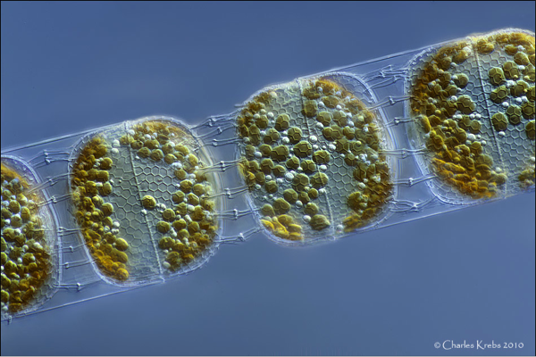
Photo credit: Charles Krebs
Stephanopyxis palmeriana are centric diatoms, approximately 27-71µm in diameter, and oblong in shape. These little rounded rectangles form chains that are connected by faint black external tubes protruding out of a slit within the diatom wall. Many chloroplasts are visible dotting the inside of their cells.
Stephanopyxis palmeriana are found in temperate to warm water.
For more information see
A Taxonomic Guide to Some Common Marine Phytoplankton, by Rita Horner (Biopress Ltd. 2002)
Images of Azadinium by Urban Tillmann
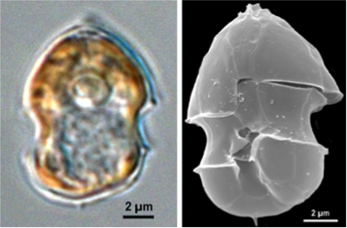
Image of Azadinium by B. Krock
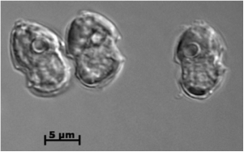
Azadinium spinosum are small dinoflagellates that are 12-16µm long and 7-11µm wide. They have a large posterior nucleus and a single chloroplast. These organisms can be mistaken for Heterocapsa and Scrippsiella. Azadinium produce Azaspiracid (AZA-1) and its derivatives (AZA2-30) causing Azaspiracid Poisoning (AZP) in humans. The first case occurred in the 1990s following an outbreak of human illness associated with ingestion of contaminated shellfish from Ireland. SoundToxins volunteers have been working for many years to find Azadinium in Puget Sound, however this cell can easily pass through a 20 µm-mesh phytoplankton net and must be identified in whole water samples.
Azadinium species, including A. spinosum, A. poporum and A. obesum, were identified at several sites throughout Puget Sound in the summer of 2014 using molecular probes. Low levels of AZA-2 were measured in plankton samples collected from Sequim Bay in the summer of 2012.
For more information see
NOAA’s Azadinium Fact Sheet (http://products.coastalscience.noaa.gov/pmn/_docs/Factsheets/Factsheet_Azadinium.pdf)
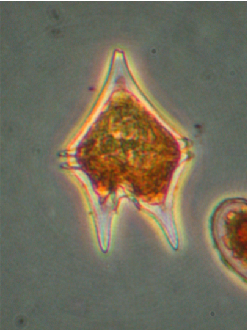
Protoperidinium oceanicum
Photo credit: Dr. Vera Trainer and Brian Bill, NOAA
Protoperidinium oceanicum are large dinoflagellates, that are 200-300µm long and 150um wide. They have long horns extruding from the top and bottom of the cell. Red, heart-shaped cysts form within the organism, which makes it perfect as the February phytoplankton of the month!
P. oceanicum are found in oceanic, costal, temperate, and tropical waters.
For more information see:
A Taxonomic Guide to Some Common Marine Phytoplankton, by Rita Horner (Biopress Ltd. 2002)
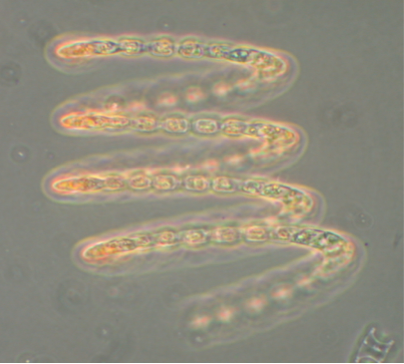 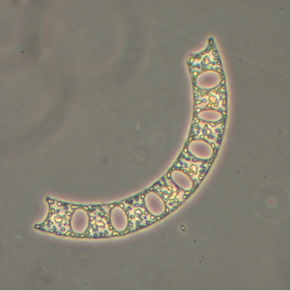
Left image: Eucampia chain; Right image: Eucampia chain segment
Photo credit: Dr. Vera Trainer and Brian Bill, NOAA
Eucampia zodiacus are centric diatoms, 10-61µm long, with their cells joined together by flat projections forming beautiful helical chains. Eucampia has many girdle bands, but they are difficult to see. On the other hand, their disc shaped chloroplasts are quite visibly distributed throughout the cell.
Eucampia are found everywhere except in polar waters.
For more information see:
A Taxonomic Guide to Some Common Marine Phytoplankton, by Rita Horner (Biopress Ltd. 2002)
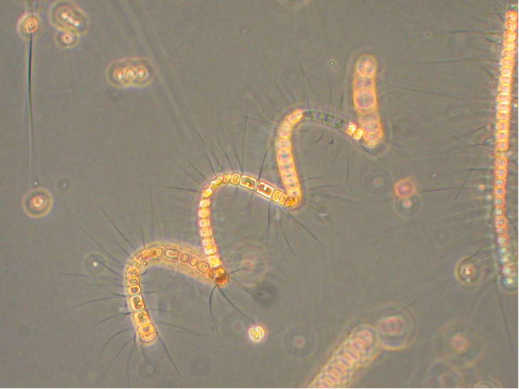
Photo credit: Dr. Vera Trainer and Brian Bill, NOAA
Chaetoceros debilis are centric diatoms that are 8-40 um wide, that connect into twisted chains. The ends of the cell walls are either flat or slightly concave with rounded corners. The spaces between the cells appear almost rectangular and slightly compressed. The spines start from inside the cell and extend outwards.
Chaetoceros debilis's distribution is cosmopolitan in cold waters.
For more information see:
A Taxonomic Guide to Some Common Marine Phytoplankton, by Rita Horner (Biopress Ltd. 2002)
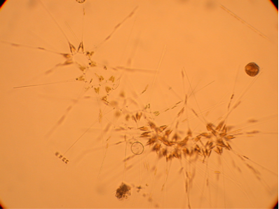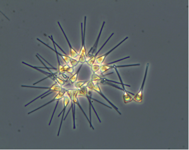
Photo credit: Dr. Vera Trainer and Brian Bill, NOAA
Asterionellopsis glacialis are pennate diatoms that are joined by the valve faces of elongated foot poles to create a spiraled, star-shaped chain (30-150um long). The foot pole narrows to form an elongated extension (neck). The foot pole is triangular in girdle view and rounded in valve view. One to two chloroplasts are present only in the foot pole.
Asterionellopsis glacialis's distribution is cosmopolitan, and is sometimes abundant in cold to temperate waters. They are frequently members of the surf zone diatom community.
For more information see:
A Taxonomic Guide to Some Common Marine Phytoplankton, by Rita Horner (Biopress Ltd. 2002)
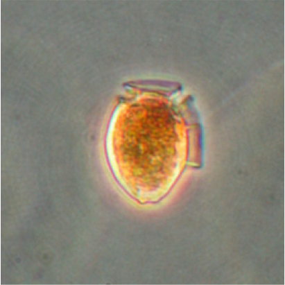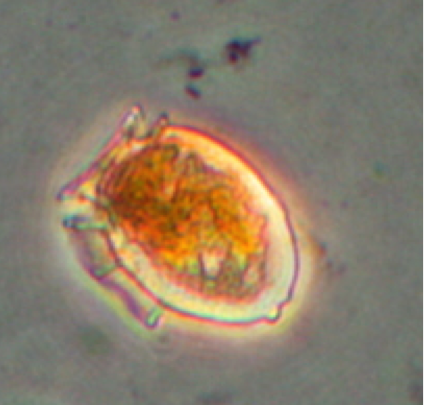
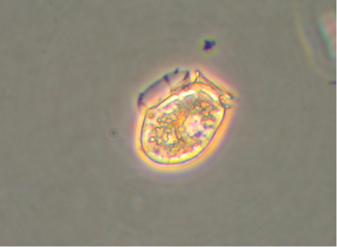
Photo credit: Dr. Vera Trainer and Brian Bill, NOAA
Dinophysis acuminata are smaller sized (38-50µm long and 30-35 µm wide) armored dinoflagellates. The top of the cell (epitheca) is low and either flat or weakly convex while the bottom (hypotheca) is rounded and sometimes has small protuberances (bumbs) along the bottom edge. The side wing (left sulcal list) of the cell is supported by three ribs and extends down slightly over half of the cell length. Their chloroplasts are reddish-brown in color.
Their distribution is neritic in cold to warm temperate waters worldwide and are often present in late spring to summer. They produce dinophysis toxins and okadaic acid causing Diarrhetic Shellfish Poisoning in humans.
For more information see:
A Taxonomic Guide to Some Common Marine Phytoplankton, by Rita Horner (Biopress Ltd. 2002)
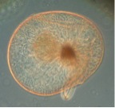 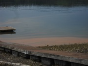
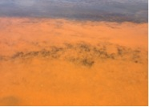 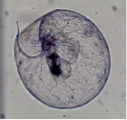
Photo credit: top left and bottom right: Dr. Vera Trainer and Brian Bill, NOAA; top right: Teri King, Washington Sea Grant; bottom left: Dan Hanson, Hood Canal resident
Noctiluca scintillans is an unarmoured dinoflagellate with cells ranging in size from 200 to 2,000 µm in diameter. Their cytoplasm may contain photosynthetic symbionts. Since chloroplasts are absent in Noctiluca, they obtain their food by engulfing prey items (phagotrophy) that include diatoms, other dinoflagellates, ciliates, and fish eggs. A tentacle on the organism helps capture the prey.
Noctiluca's distribution is neritic and cosmopolitan in cold and temperate waters. They may form extensive tomato soup colored blooms during the warm calm summer months. Noctiluca, which means "night light," often produces a brilliant display of bioluminescence when the water is disturbed at night. Because it is very buoyant, it is frequently blown into windrows on the water or into bands of orange-red scum along the shore. It has been reported that large blooms may produce high levels of ammonium that could be toxic to fish.For more information on Noctiluca see: http://wsg.washington.edu/mas/pdfs/SafeShellfishBooklet.pdf A Taxonomic Guide to Some Common Marine Phytoplankton, by Rita Horner (Biopress Ltd. 2002)

Figs from: http://nordicmicroalgae.org/taxon/Scrippsiella%20trochoidea
A. Scrippsiella cells B. Scrippsiella cysts
Photographer/artist Mats Kuylenstierna
Scrippsiella trochoidea are small to medium sized pear-shaped cells that are 16-36 µm long and are 20-23 µm wide. The epitheca, the top half of the cell, is conical with an apical horn (in contrast to Alexandrium and Heterocapsa) that is often clear while the hypotheca, the bottom half of the cell, is round with no projections or horns (in contrast to Gonyaulax). Their cingulum, or girdle band, is median, wide and strongly excavated. Scrippsiella has chloroplasts and does not grow in chains.
Their distribution is in estuarine, neritic, and cosmopolitan in temperate waters. Scrippsiella may form blooms in summer. They are not known to be toxic. Scrippsiella forms spherical to ovoid calcareous cysts.
Cells are often confused with other small, round, brown dinoflagellates including Gonyaulax spinifera, Alexandrium, and Heterocapsa.
Photo from: http://media.nordicmicroalgae.org/large/Protoceratium reticulatum_2.jpg
A. LM, two focal planes; B. LM, cyst; C. SEM, whole cell with ventral pore (arrow).
Protoceratium reticulatum has polyhedral shaped cells with strong reticulations that often mask the plates; cells small to medium, 25-55 µm long, 25-35 µm wide. The epitheca a broad cone with ± straight sides, shorter than hypotheca; hypotheca with straight to convex sides, rounded to squarish antapex with no spines. Cingulum nearly medium, slightly descending. Chloroplasts present and give the cells a deep brown color.
Cells are easily confused with other smallish, round, brown cells including solitary Alexandrium cells and some Gonyaulax species. Populations from South Africa were described as Gonyaulax grindleyi Reinecke which remains a synonym. Cysts, described as Operculodinium centrocarpum (Deflandre & Cookson) Wall (also known as Hystrichosphaeridium centrocarpum Deflandre & Cookson) are spherical with dense ornamentation of tapering spines with hooked tips.
Their distribution is neritic, estuarine; cold temperate to subtropical waters; reported from all oceans. They produce yessotoxins which are toxic to mice when administered orally, but their threat to human health is currently unclear.

Thalassiosira spp. are a large, ca. 100 species, of centric, mostly marine diatoms. A few species occur in brackish to freshwater. The cells are discoid to cylindrical, solitary or joined in chains by threads composed of chitin. The valve face has areolae arranged in radial or tangential rows or arcs. Narrow tubes called strutted processes and composed of silica protrude through the silica cell wall. Their arrangement is used as a major taxonomic character. Organic threads may be extruded from the strutted processes, but their presence or absence is not a good taxonomic character. In the Pacific Northwest, Thalassiosira species are often abundant and occur early in spring as part of the spring bloom. Some Thalassiosira species are known to produce aldehydes that may be detrimental to the zooplankton, often copepods, who graze on them, although, ordinarily, Thalassiosira species are a harmless member of the phytoplankton community.
{kind=link}